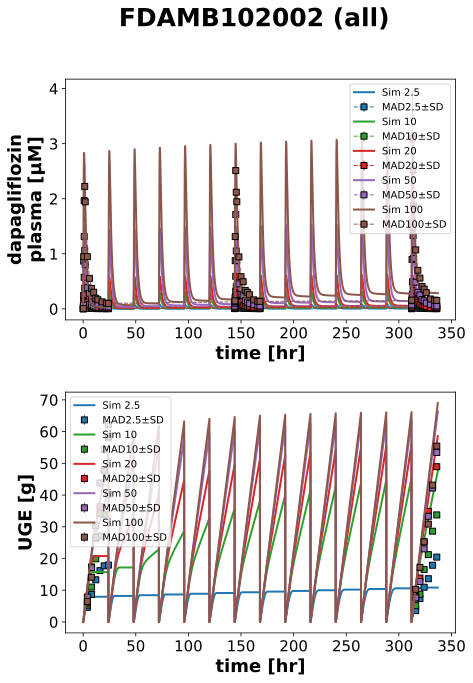

FDAMB102002
Models
Datasets
- dapagliflozin_MAD10: FDAMB102002_dapagliflozin_MAD10.tsv
- dapagliflozin_MAD100: FDAMB102002_dapagliflozin_MAD100.tsv
- dapagliflozin_MAD2.5: FDAMB102002_dapagliflozin_MAD2.5.tsv
- dapagliflozin_MAD20: FDAMB102002_dapagliflozin_MAD20.tsv
- dapagliflozin_MAD50: FDAMB102002_dapagliflozin_MAD50.tsv
- uge_MAD0: FDAMB102002_uge_MAD0.tsv
- uge_MAD10: FDAMB102002_uge_MAD10.tsv
- uge_MAD100: FDAMB102002_uge_MAD100.tsv
- uge_MAD2.5: FDAMB102002_uge_MAD2.5.tsv
- uge_MAD20: FDAMB102002_uge_MAD20.tsv
- uge_MAD50: FDAMB102002_uge_MAD50.tsv
Figures
- Fig1_all: FDAMB102002_Fig1_all.svg
- Fig1_start: FDAMB102002_Fig1_start.svg
- Fig1_end: FDAMB102002_Fig1_end.svg
{kind=link}
Fig1_all
|  |
Fig1_start

|
Fig1_end

|
Code
../../../../experiments/studies/fdamb102002.py
from typing import Dict
from sbmlsim.data import DataSet, load_pkdb_dataframe
from sbmlsim.fit import FitMapping, FitData
from sbmlutils.console import console
from pkdb_models.models.dapagliflozin.experiments.base_experiment import (
DapagliflozinSimulationExperiment,
)
from pkdb_models.models.dapagliflozin.experiments.metadata import Tissue, Route, Dosing, ApplicationForm, Health, \
Fasting, DapagliflozinMappingMetaData
from sbmlsim.plot import Axis, Figure
from sbmlsim.simulation import Timecourse, TimecourseSim
from pkdb_models.models.dapagliflozin.helpers import run_experiments
class FDAMB102002(DapagliflozinSimulationExperiment):
"""Simulation experiment of FDAMB102002."""
doses = [2.5, 10, 20, 50, 100]
colors = {
0: "black",
2.5: "tab:blue",
5: "tab:orange",
10: "tab:green",
20: "tab:red",
50: "tab:purple",
100: "tab:brown"
}
info = {
"[Cve_dap]": "dapagliflozin",
"KI__UGE": "uge",
}
def datasets(self) -> Dict[str, DataSet]:
dsets = {}
# Fig12: dap
# Fig17: UGE
for fig_id in ["Fig12", "Fig17"]:
df = load_pkdb_dataframe(f"{self.sid}_{fig_id}", data_path=self.data_path)
for label, df_label in df.groupby("label"):
dset = DataSet.from_df(df_label, self.ureg)
# unit conversion to mole/l
if label.startswith("dapagliflozin_"):
dset.unit_conversion("mean", 1 / self.Mr.dap)
dsets[f"{label}"] = dset
# console.print(dsets)
# console.print(dsets.keys())
return dsets
def simulations(self) -> Dict[str, TimecourseSim]:
Q_ = self.Q_
tcsims = {}
for dose in self.doses:
tc0 = Timecourse(
start=0,
end=24 * 60, # [min]
steps=500,
changes={
**self.default_changes(),
# physiological changes
"BW": Q_(self.bodyweight_default, "kg"),
"[KI__glc_ext]": Q_(self.fpg_healthy, "mM"),
"GU__f_absorption": Q_(self.fasting_map["fasted"], "dimensionless"),
"f_cirrhosis": Q_(self.cirrhosis_map["Control"], "dimensionless"),
"KI__f_renal_function": Q_(self.renal_map["Normal renal function"], "dimensionless"),
# dose (IVDOSE, PODOSE)
"PODOSE_dap": Q_(dose, "mg"),
},
)
tc1 = Timecourse(
start=0,
end=24 * 60, # [min]
steps=500,
changes={
"KI__glc_urine": Q_(0, "mmole"), # reset UGE
"PODOSE_dap": Q_(dose, "mg"),
},
)
tc2 = Timecourse(
start=0,
end=25 * 60, # [min]
steps=500,
changes={
"KI__glc_urine": Q_(0, "mmole"), # reset UGE
"PODOSE_dap": Q_(dose, "mg"),
},
)
tcsims[f"po_MAD{dose}"] = TimecourseSim(
[tc0] + [tc1 for _ in range(12)] + [tc2],
# time_offset=-13*24*60,
)
return tcsims
def fit_mappings(self) -> Dict[str, FitMapping]:
mappings = {}
for dose in self.doses:
for kp, sid in enumerate(self.info):
name = self.info[sid]
mappings[f"fm_dap{dose}_{name}"] = FitMapping(
self,
reference=FitData(
self,
dataset=f"{name}_MAD{dose}",
xid="time",
yid="mean",
yid_sd="mean_sd",
count="count",
),
observable=FitData(
self, task=f"task_po_MAD{dose}", xid="time", yid=sid,
),
metadata=DapagliflozinMappingMetaData(
tissue=Tissue.URINE if "UGE" in sid else Tissue.PLASMA,
route=Route.PO,
application_form=ApplicationForm.TABLET,
dosing=Dosing.MULTIPLE,
health=Health.HEALTHY,
fasting=Fasting.FASTED,
),
)
return mappings
def figures(self) -> Dict[str, Figure]:
figures = {}
subplots = ["all", "start", "end"]
for subplot in subplots:
fig = Figure(
experiment=self,
sid=f"Fig1_{subplot}",
num_rows=2,
num_cols=1,
name=f"{self.__class__.__name__} ({subplot})",
)
plots = fig.create_plots(xaxis=Axis(self.label_time, unit=self.unit_time), legend=True)
plots[0].set_yaxis(self.label_dap_plasma, unit=self.unit_dap)
plots[1].set_yaxis(self.label_uge, unit=self.unit_uge)
for kp in [0, 1]:
if subplot == "start":
plots[kp].xaxis.min = -3
plots[kp].xaxis.max = 30
elif subplot == "end":
plots[kp].xaxis.min = 310
plots[kp].xaxis.max = 340
for dose in self.doses:
for kp, sid in enumerate(self.info):
name = self.info[sid]
# simulation
plots[kp].add_data(
task=f"task_po_MAD{dose}",
xid="time",
yid=sid,
label=f"Sim {dose}",
color=self.colors[dose],
)
# data
plots[kp].add_data(
dataset=f"{name}_MAD{dose}",
xid="time",
yid="mean",
yid_sd="mean_sd",
label=f"MAD{dose}",
color=self.colors[dose],
linestyle="" if name == "uge" else "--"
)
figures[fig.sid] = fig
return figures
if __name__ == "__main__":
run_experiments(FDAMB102002, output_dir=FDAMB102002.__name__)